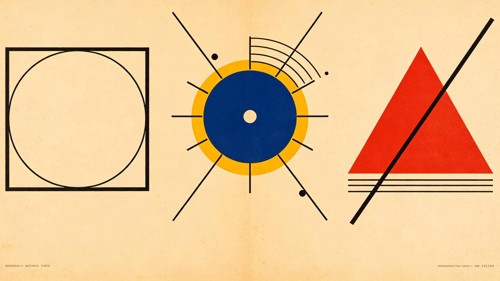
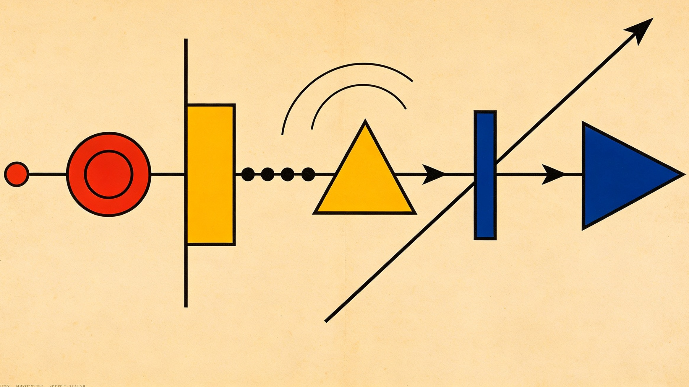
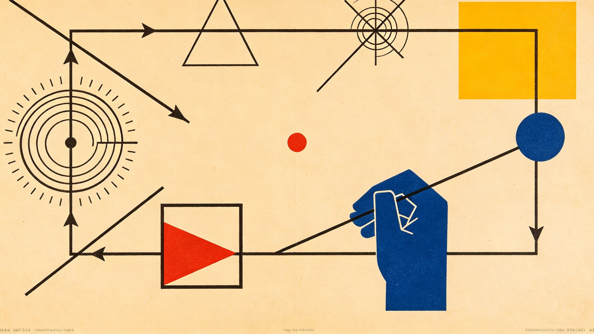
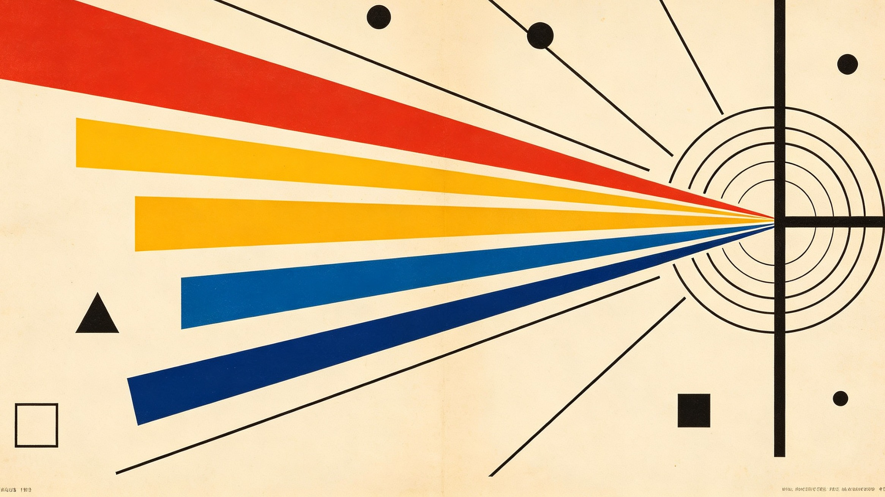
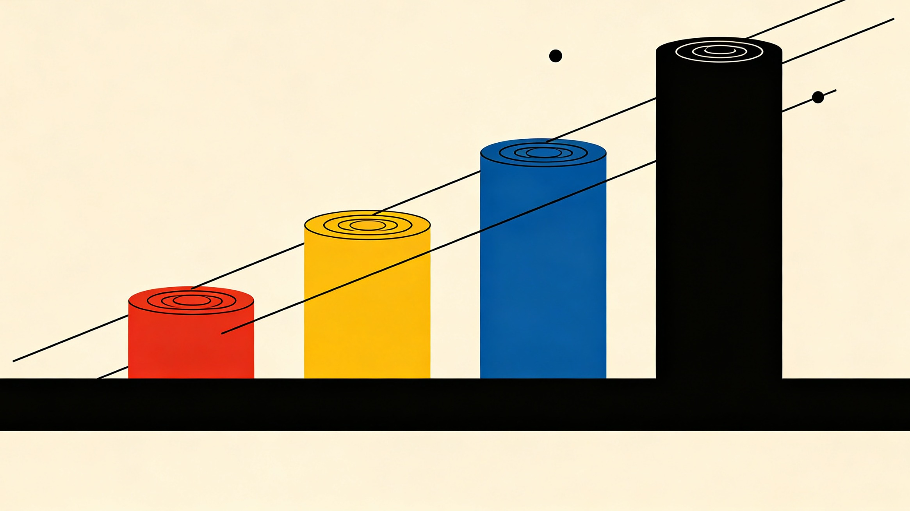

解析运动学负责手指怎么动,视觉闭环纠正镊子尖端的位置误差,触觉单独调节内抓取力。三个角色分开,而不是交给端到端学习——这是上篇腕部固定框架的续作。
三个角色,各管一段
灵巧手的内部自由度比普通夹爪多得多。但在大多数机器人用工具的系统里,这些自由度只用来"抓稳"——工具一旦被抓住,它在空间里怎么走,基本都交给机械臂了。
人的精细操作不是这样。写字、用镊子、扎针、做精细装配的时候,腕子几乎不动,手就能让工具尖端准确地挪动几毫米。
于是有了另一种分工:
这篇工作要研究的就是 fixed-wrist 灵巧工具操作:所有局部运动都由手指关节产生。具体任务是——
灵巧手攥着一把镊子,机械腕完全固定,靠手指的协同运动,把镊子尖端在约 ±5 毫米的局部笛卡尔工作空间里挪动。
目标不是"把手指动起来",而是直接控制工具尖端的笛卡尔状态。
经典多指操作研究早就建立了手指运动学、接触约束、物体运动与抓取力之间的解析关系,Cole、Hauser 和 Sastry 就给出了带滚动接触与摩擦约束的多指操作运动学与控制 [1]。真拿镊子做操作也有人做过:Senoo 等人分析手指与镊子的接触,接上高速视觉伺服,在二维和三维实验里用镊子夹小物体 [2]。之后视觉伺服又被用来控制多指手所握物体的笛卡尔位置,用视觉信息抑制扰动、把控制环合在物体层面 [3]。更近的工作则在研究多指操作的可微滚动接触模型与轨迹优化 [4],以及用触觉力调节来提升接触变化下的鲁棒性 [5]。
和"要么全靠一个精确的解析模型、要么干脆整个换成强化学习"这两条路都不同,这篇提的是一个混合方案:
解析模型负责快速、可解释的运动协调;视觉补掉手—工具模型的误差;触觉负责调抓取力、并且发现接触退化。三者各干各的,谁也不越界。

系统定义
设灵巧手有 n 个主动手指关节,关节构型记为
精细操作期间假定腕子固定:
镊子被拆成两部分:六维刚体位姿,加上一个描述开合的内部自由度。刚体位姿是
它的空间速度是 $V_o=[v_o;\ \omega_o]$。再用 α 表示镊子的开合状态,于是工具的广义速度是
手指与工具之间那层约束
假设有 m 根手指与工具保持接触。对第 i 根手指,$p_i=f_i(q_i)$,它产生的接触点速度是 $\dot p_i=J_i(q_i)\dot q_i$。把所有手指叠起来:
也就是
再把接触点 i 在工具坐标系里的位置记为 $r_i(\alpha)$,它的世界位置是 $p_{c_i}=p_o+R_or_i(\alpha)$。求导得
写成紧凑形式就是 $\dot p_{c_i}=A_i(T_o,\alpha)\nu$;把所有接触叠起来得到 $v_c=A(T_o,\alpha)\nu$。假设接触保持局部粘滞,就得到
式 (2) 构成了核心解析模型。它表达的关系是
任务定义在镊子尖端上
真正要操作的不是手指接触点,而是镊子尖端。设 $p_t$ 是两个尖端的中点,期望的笛卡尔任务可以表示成
其中 $p_t$ 是尖端位置,$\phi_o$ 是工具朝向。如果开合量也要控,就变成
尖端速度与工具广义速度通过下面这条式子联系起来:
式 (2) 和式 (3) 合起来,给出了一条完整的解析链:
这条链可以整体看成一个新的「手—工具任务雅可比」。局部上,$\dot x_{\mathrm{tip}}=J_{\mathrm{task}}\dot q$。和传统机械臂雅可比不一样的是,$J_{\mathrm{task}}$ 同时包含了灵巧手和被抓住的工具——它描述的不是手指去哪,而是工具尖端去哪。

控制器:先用解析模型把手指协调起来
设期望的尖端位姿是 $x_d$,实测位姿是 $\hat x$,笛卡尔误差 $e_x=x_d-\hat x$。解算速度控制器给出 $v_x^*=\dot x_d+K_pe_x$;点对点定位时 $\dot x_d=0$,于是
期望的手指速度则通过带约束的优化拿到:
这个 QP 在尊重关节限位、维持偏好抓握构型的前提下,给出协调的手指运动。注意目标函数里多了一项 $\|q-q_{\mathrm{nom}}\|^2$——把手拉回舒服的手型,这在前一篇里是可选,这篇是标配。
视觉:别指望模型完全准
纯解析控制有个前提假设:$J_h$、$A$、$H$ 能准确描述真实系统。对一把攥着镊子的灵巧手来说,这个假设很难成立。误差来源一大堆:手指标定不准、指尖软组织变形、接触位置漂移、腱传动误差、少量滑移、镊子自身的柔顺性,以及初始抓握的不确定性。
所以控制器干脆把闭环直接合在真正重要的那个量上——镊子尖端的位姿。外部相机、双目系统、光学追踪器或者标记点系统给出 $\hat x_{\mathrm{tip}}$。
视觉不替代解析控制器,它只负责提供式 (4) 里的那个误差项:
于是整个架构变成
$\hat x_{\mathrm{tip}}$ 由视觉反馈回来。哪怕解析模型算出的手指运动不完美,下一个控制周期也会看到残余的笛卡尔误差,并把它纠掉。对精密镊子操作而言这点特别有用:直接测量工具尖端,就不需要把每一个"手指—工具接触状态"都估得那么准。

触觉:视觉管去哪,触觉管夹没夹稳
视觉反馈控制的是镊子去哪里,它不保证手指一直稳稳夹着。设接触力向量 $f=[f_1^T,\ldots,f_m^T]^T$,作用在工具上的净力旋量是 $w=Gf$,$G$ 是抓取矩阵。手指关节力矩满足
接触力可以拆成 $f=f_{\mathrm{task}}+f_{\mathrm{int}}$,其中内力满足
这些力能提高抓取稳定性,又不会让工具产生任何净运动。所以触觉控制器可以专门去调内力,$f_{\mathrm{int}}\rightarrow f_{\mathrm{int}}^d$,例如
完整的关节指令可以概念性地拆成两段:
运动控制器产生跟踪工具尖端所需要的协调运动,抓取控制器则维持足够的法向力,防止滑移。近年触觉在掌操作的研究也表明,在基于优化的操作里加上接触力调节与柔顺性,鲁棒性比开环执行轨迹要好 [5]。
完整架构:三个角色被刻意分开
整个系统包含三层嵌套的功能。
工具空间控制。 视觉测量 $x_{\mathrm{tip}}$,笛卡尔误差 $e_x=x_d-x_{\mathrm{tip}}$,期望工具速度 $v_x^*=K_pe_x$。
基于模型的手部协调。 解析模型通过式 (5) 的 QP 求解 $J_h\dot q=A\nu$ 与 $H\nu\approx v_x^*$,产出协调的手指运动。
接触力调节。 触觉测量 $f_i$,把内抓取力调到 $f_d$,而有意不改变工具运动。
三个感知与建模角色是刻意分开的,各自回答一个问题:
二维算例:5 → 4.6 → 4.93 → 4.99 → 5.00
考虑两根平面 2-DOF 手指夹一把刚性工具。关节向量 $q=[q_{11},q_{12},q_{21},q_{22}]^T$,工具的平面状态是 $\xi=[x,y,\theta]^T$。假设两个接触点对称分布:$r_1=(-a,0)^T$、$r_2=(a,0)^T$。工具水平时
接触约束是
假设期望操作是保持姿态不变、把尖端向右平移 5 毫米,即 $\Delta\xi_d=[5,0,0]^T$ 毫米,那么 $A\Delta\xi_d=[5,0,5,0]^T$ 毫米——两个接触点都该向右挪大约 5 毫米。模型先算出一次关节位移:
但模型误差让真实工具只走了 4.6 毫米。相机看到 $x_{\mathrm{measured}}=4.6$ 毫米,残余误差变成
下一轮指令是 $v_x^*=K_p(0.4)$,于是
留意这个序列:解析模型根本不需要一次开环就把 5 毫米走准。这就是"解析运动学 + 视觉反馈"最大的好处。与此同时间,触觉环路把法向接触力维持在 $F_{n,1}\approx F_{n,1}^d$、$F_{n,2}\approx F_{n,2}^d$。定位精度和抓取稳定性因此是分开控制的,互不干扰。

可选扩展:让雅可比在线自适应
一个可选的扩展,是让解析任务雅可比自己去适应系统性的模型误差。最近有纯在掌写字的工作表明,完整的手—物任务雅可比可以直接在线估计,不需要解析接触模型;那套物理系统的面内跟踪误差平均约 0.6 毫米,而笔的运动完全由手指关节产生 [6]。
这提示了一条介于"纯解析建模"和"端到端学习"之间的中间路线。设 $J_a$ 是解析任务雅可比,引入修正 $\Delta J$,则
解析模型提供初始结构,观测到的工具运动去更新 $\Delta J$——比如用 $\Delta x_k=J_k\Delta q_k$ 递推更新 $J_k$。这样既保留了物理结构,又能补偿接触不确定性。当同一只手反复操作同一类镊子时,这条路尤其值得走。
实验设计与消融实验
实验平台大致需要:多自由度灵巧手、固定的机械腕、关节编码器、指尖触觉或力传感器、一把普通镊子,以及一套外部光学追踪或视觉系统。流程是机械臂先把灵巧手送到操作区域附近,然后锁死,后续所有精细运动都交给手。
点对点运动。 第一组基准是六个笛卡尔目标:$(+5,0,0)$、$(-5,0,0)$、$(0,+5,0)$、$(0,-5,0)$、$(0,0,+5)$、$(0,0,-5)$ 毫米,姿态保持常数,一个代表性要求是
轨迹跟踪。 让尖端依次跟踪直线、半径 5 毫米的圆、方形、八字和三维螺旋。
镊子操作。 最后一组实验同时控制位姿和开合,状态是 $x=[p_x,p_y,p_z,\phi_x,\phi_y,\phi_z,d]$:手先移向一个小目标,再缩小 $d$ 把它夹住。这组检验的是"工具平移"和"功能性动作"能不能同时做。
不过最值得做的还是消融——比较四个控制器:
- A:只用解析模型,开环执行。
- B:解析模型 + 视觉,加上视觉伺服。
- C:解析模型 + 视觉 + 触觉,再加力控。
- D:在线任务雅可比,配视觉反馈。
比较时测量尖端 RMSE、最大笛卡尔误差、姿态误差 $e_R$、重复性、接触滑移、力波动和任务成功率。这组实验能直接回答一个科学问题:
毫米级的在掌灵巧工具操作,到底需要多少物理建模?

讨论
传统系统的分工通常是"手→抓、臂→工具运动";这套架构换成了"臂→粗定位、手→局部笛卡尔操作"。灵巧手因此变成一台嵌在机械臂末端的第二台机械手——工作空间可能只有几毫米到几厘米,但这个空间可以拿去换精度。
这个概念很像粗/精两级执行器:机械臂给出"大工作空间 + 中等精度",手指给出"小工作空间 + 高精度"。对外科操作、实验室自动化、电子装配这类摆弄小器械的任务,这个区分尤其相关。
它还规避掉了一个强要求——解析的手—工具模型不必完美。取而代之的分配是:物理提供结构,视觉提供精度,触觉提供接触鲁棒性。至于接触位置会明显移动的大范围在掌运动,后续可以用带滚动与几何约束的轨迹优化方法把框架拓出去 [4]。
结论
这篇论文提出了一套基于模型的视觉—触觉框架,只用手指运动就实现了对镊子的精密灵巧操作。解析核心是
配合任务映射
把期望的尖端运动翻译成协调的手指运动。视觉反馈把控制环直接合在镊子尖端上:
触觉反馈则独立调节内抓取力:
最终架构把三件事拼在一起:
在约 ±5 毫米的目标操作范围内,这个表述避开了完整接触隐式规划的复杂度,同时比纯开环解析控制鲁棒得多。更一般地说,它提示了一条分层操作原则:机械臂做粗定位,灵巧手则作为围绕工具尖端的局部高精度机械手。
参考文献
[1] A. Cole, J. Hauser, and S. Sastry, "Kinematics and Control of Multifingered Hands with Rolling Contact," IEEE Transactions on Automatic Control, vol. 34, no. 4, pp. 398–404, 1989. DOI: 10.1109/9.28014.
[2] T. Senoo, D. Yoneyama, A. Namiki, and M. Ishikawa, "Tweezers Manipulation Using High-Speed Visual Servoing Based on Contact Analysis," IEEE International Conference on Robotics and Biomimetics, pp. 1936–1941, 2011. DOI: 10.1109/ROBIO.2011.6181574.
[3] M. F. Reis, A. C. Leite, P. J. From, L. Hsu, and F. C. Lizarralde, "Visual Servoing for Object Manipulation with a Multifingered Robot Hand," IFAC-PapersOnLine, vol. 48, no. 19, pp. 1–6, 2015. DOI: 10.1016/j.ifacol.2015.12.001.
[4] F. Yang, T. Power, S. Aguilera Marinovic, S. Iba, R. Soltani Zarrin, and D. Berenson, "Multi-Finger Manipulation via Trajectory Optimization With Differentiable Rolling and Geometric Constraints," IEEE Robotics and Automation Letters, vol. 10, no. 5, 2025. DOI: 10.1109/LRA.2025.3557752.
[5] H. Lee, Y. Kim, V. M. Staven, and C. Sloth, "Trajectory Optimization for In-Hand Manipulation with Tactile Force Control," IEEE/RSJ International Conference on Intelligent Robots and Systems, 2025. DOI: 10.1109/IROS60139.2025.11246500.
[6] K. Stewart, Y. Toshimitsu, and R. K. Katzschmann, "Rapid Learning of Dexterous In-Hand Pen Writing through Real-Time Jacobian Estimation," arXiv:2609.11775, 2026.